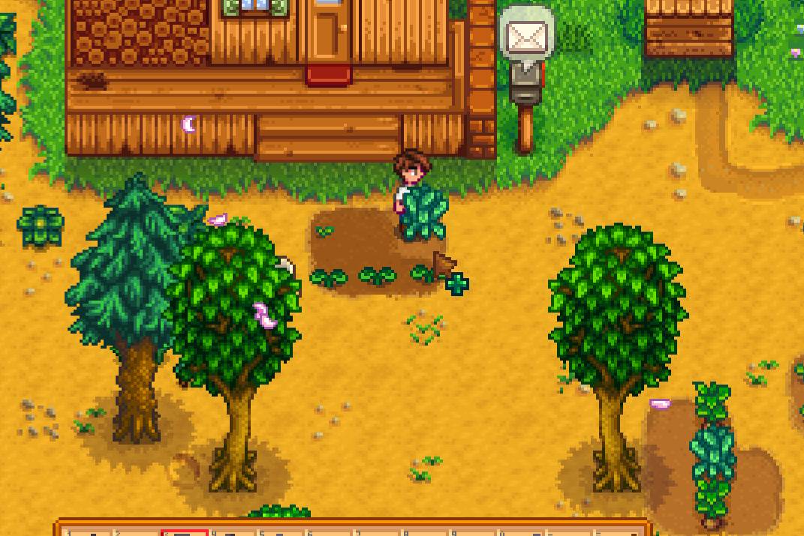
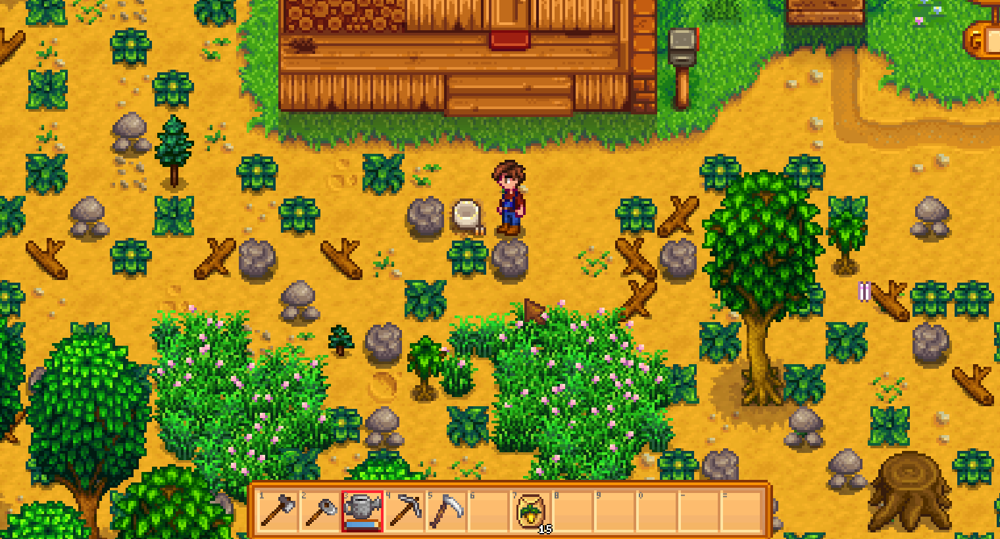

Quick answers (read this first)
- Priority: space for a small watered patch plus walking paths to the exits.
- Chop trees and debris near the house first; leave distant woods for later.
- The broken greenhouse is a landmark—you cannot fix it with the axe on day 1.
- Rainy days are great clearing days because watering costs no energy.
- Wood and stone are useful; Exhaustion from a full-map clear is not.
Who this is for (and who should skip)
Use this if your farm looks like a forest and you feel behind for not bulldozing it. You do not need a flat map before your first harvest.
Skip or skim if you already layout-plan with mods or year-2 machines. This is starter decluttering.
Version note (Stardew Valley 1.6): QoL tweaks to tools and accessibility exist, but the clearing loop is unchanged. Standard, Forest, and Hill-top farms start with different debris—the rule still holds: clear a small core first, then expand when watering and energy allow.
From our Year 1 save (real pitfalls): clear a small crop core only—do not flatten the map on day one. Big stumps need an upgraded axe; walk around them until Clint catches up. Rainy afternoons are the best chop days because crops water themselves.
Pros & cons of slow clearing
| Details | |
|---|---|
| Pros | Energy left for crops; wood trickles in steadily; less restart urge; you learn the map before committing to barn placement. |
| Cons | Farm looks messy compared to showcase screenshots; distant trees still block sight lines. |
| Use when | Year 1, especially Spring through Summer when crop size is still growing. |
| Skip when | You already have paths, chests, and a stable field that you water without thinking. |
Clearing pace comparison: fast vs slow vs rainy-only
| Style | When it works | Year 1 risk |
|---|---|---|
| Week-one full clear | Experienced players on a second save | Exhaustion, missed watering, no crop income |
| Core-first slow clear | First-time or relaxed runs | Farm looks cluttered for a while—acceptable |
| Rainy-day chopper | When patch is stable and rain is forecast | Low risk; wood stacks without hurting crops |
| Path-only minimal | Players who want cozy forests forever | Less build space; still valid |
Personal tips from our Year 1 save
Photo 1 shows day 1 as intended: cluttered and normal. We carved a rectangle like photo 26 and expanded only after Spring crops sold reliably. Rainy afternoons became wood days—photo 38 beside the greenhouse—because rain watered crops for free. We chested wood near the house and walked around large stumps until the axe upgraded at Clint’s.
Interactive checklist
Tick as you play. Saved in this browser only.
Safe to skip (anti-FOMO)
- Full-map deforestation in week one.
- Removing every decorative bush for efficiency.
- Fighting hardwood stumps with a starter axe forever—upgrade or walk around.
- Clearing the pond edge before you know whether you want fish or buildings there.
Decision table: chop now or later?
| Object | Now? | Why |
|---|---|---|
| Weeds / small rocks near house | Yes | Cheap space for crops |
| Trees blocking the south exit | Yes | Travel tax every day |
| Far corner forests | Later | No daily value yet |
| Ruined greenhouse | Leave | Story/progression unlock, not axe spam |
| Big stump (needs better axe) | Walk around | Energy sink |
| Twigs and weeds on crop tiles | Yes | One hoe swing or pick—fast payoff |
Real screenshots from our Year 1 save

Game screenshot © ConcernedApe — used for guide commentary

Game screenshot © ConcernedApe — used for guide commentary

Game screenshot © ConcernedApe — used for guide commentary
How to clear without burnout (operations)
- Check weather. Sunny: water crops before chopping. Rain: skip watering.
- Pick one zone. Eight crop tiles, south gate path, or one rectangle—one zone per session.
- Use the right tool. Axe for trees, pickaxe for rocks, scythe for weeds.
- Work outward from the house. Connect paths to the bin and exits without backtracking.
- Chest wood and stone early. A full hotbar blocks forage on the walk home.
- Stop with energy left on sunny days. Reserve energy for errands or tomorrow’s watering.
- On rain days, chop until mid-afternoon. Use leftover time for mines or town.
- End before Exhausted. Clearing is a multi-week project, not a day-one sprint.
Common mistakes
- Full clear before first harvest. Players flatten the map, run out of energy, and miss watering. A small planted patch pays for seeds and upgrades while you clear slowly.
- No path to town or the forest. Every trip over uncleared debris costs time and energy. Open at least one clean route south and east early.
- Carrying stacks of wood on the hotbar. Wood is useful, but ninety-nine logs in slot one blocks tools and food. Chest it—see the inventory guide.
- Treating the greenhouse as a debris pile you failed to remove. It repairs through Community Center or Joja progress. Chopping does nothing.
- Ignoring axe tier for large stumps. Some stumps need copper or better. Beating them with a basic axe drains energy for minimal progress. Upgrade, or path around.
Alternative variations
- Aesthetic messy farm: Clear only crop tiles and paths forever. Forests stay wild. Valid cozy run—animals and sprinklers can wait.
- Wood-focused rainy chopper: Ship excess wood on rainy days while keeping a crop loop. Works when you need building materials for chests and fences.
- Layout planner: Clear rectangles where barns or coops will go later, but do not build until income is stable. Paint the map with empty grass first.
FAQ
Should I clear everything before Summer?
No. Clear what you use daily. Distant forests can wait until your crop patch is stable and you have tool upgrades. Summer expansion is fine—just do not sacrifice Spring watering to do it.
Why won’t this stump break?
Some stumps require a stronger axe tier. Check Clint’s upgrade menu, or walk around the stump and clear elsewhere until you can upgrade.
Is the broken greenhouse broken forever?
No. It repairs through Community Center bundle progress or the Joja route. It is not a clearing failure—it is a progression gate.
Do different farm maps change clearing priority?
Yes. Forest farms have more trees; Hill-top has more rocks. The core-first rule still applies: house, bin, exits, then expand.
Should I pick up every twig and weed while clearing?
On crop tiles, yes—one swing frees planting space. Off-path forage can wait unless you need fiber for crafting or your inventory has room.
Next steps / related pages
Unofficial fan guide. Not affiliated with ConcernedApe.